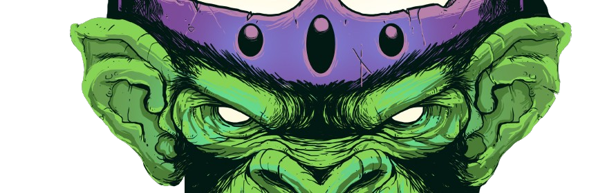
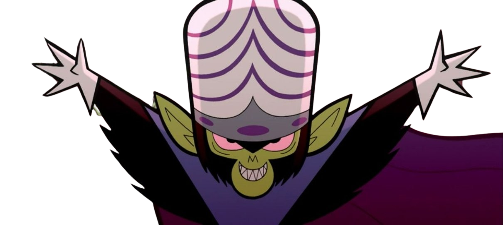

Crazy Monkey
História do Macaco Louco
Macaco Louco muitas vezes surge com planos para dominar o mundo e é constantemente interrompido pelas Meninas Superpoderosas. Ele é um notório chimpanzé gênio cujo objetivo principal é destruir as Meninas Superpoderosas, esmagar Townsville e conquistar o mundo, nessa ordem. Para fazer isso, ele passa muito tempo planejando e inventando novas tecnologias de armas. Isso normalmente vem na forma de robôs gigantes ou grandes armas de energia. De alguma forma, ele tem alto uso de vocabulário e frases de longa duração, completas com um sotaque japonês.
Macaco Louco também era o líder dos Beat-Alls , um "bando" de quatro supervilões composta por Ele, Fuzzy Confusão, Princesa MaisGrana e o próprio Macaco Louco. Infelizmente, o grupo não durou muito tempo depois que ele se separou deles.
Seu nome original é ''Caco'', e no início, Caco, não era exatamente mau, mas sim um chimpanzé encrenqueiro. Como visto no filme e A Volta de Macaco Loco, Caco já foi a coisa favorita do Professor Utônio, mas quando ele tentou criar as Meninas Superpoderosas e começou a ignorar Caco, ele ficou com ciúmes e tentou destruir o experimento a fim de fazê-lo passar tempo com ele, mas involuntariamente tornou-se responsável por seu nascimento. O Elemento X também atingiu Caco, dando-lhe um enorme cérebro saindo de sua cabeça. No entanto, também lhe deu novas emoções que ele nunca sentiu antes, como inveja e um pouco de complexo de inferioridade. As meninas pensaram que Caco estava lá para ajudá-las, mas tudo o que importava para Caco era retornar a Townsville e se vingar.
Após a criação, ele se mostrou malvado, sinistro e vilão, então decidiu invadir a cidade e para isso usou as meninas (manipulando-as fazendo amizade com elas) e criou um exército completo de primatas sequestrados do zoológico, e então tentou matar o professor transformando-se em um monstro feroz e agressivo do tamanho de King Kong.
Macaco Louco dedicou sua vida para se vingar das Meninas Superpoderosas para recuperar seu direito de primogenitura. Não tendo escolha a não ser viver em uma caixa na rua, Macaco Louco ficou isolado por um grande período de tempo depois de ser expulso de casa, o que o tornou meio solitário. No entanto, antes que isso acontecesse, Macaco Louco era indesejado na sociedade pela singularidade de ser um chimpanzé com um cérebro enorme.
No entanto, no final do episódio do décimo aniversário (ou filme), ele realmente se tornou bom por ajudar todos na cidade e tudo foi pacífico e não violento. Mas então ele estalou e ficou furioso como sempre e foi enviado para a prisão.
Macaco Louco é uma das maiores ameaças da série. Ele realmente conseguiu derrotar as Meninas Superpoderosas em A Volta do Macaco Louco, facilmente esmagando todas as três de uma só vez, e ele até as superou quando elas tentaram bolar um plano fracassado para derrubá-lo. No início de Trabalho de Macacoloco também, Macaco Louco quase destruiu as meninas até que a polícia o pegou. Isso resultou nas meninas indefesas terminando no hospital com os braços quebrados e feridas afiadas. Ele também conseguiu transformar o mundo inteiro em cães para governar o mundo, e transformou as Meninas Superpoderosas em cachorras, fazendo com que perdessem seus poderes e, portanto, não pudessem voar atrás dele.
Também notado, Macaco Louco também é responsável por criar as Meninas Superpoderosas, empurrando o Professor Utonium para acertar o Elemento X e criar as Meninas Superpoderosas. Macaco Louco se tornou o segundo pai das Meninas Superpoderosas, enquanto o Professor Utônio é o primeiro pai. Em as Meninas Superpoderosas O Filme, é revelado que Macaco Louco não é apenas um pai das Meninas Superpoderosas, ele também é seu irmão, devido a eles terem poderes semelhantes causados pelo Elemento X, como as Meninas Superpoderosas com superpoderes e Macaco Louco com uma inteligência poderosa.

Eh, com essas joias, a maldição mágica do antigo Anubis, cabeça de cachorro finalmente será desfeita!
Então a raça humana se curvará diante de mim, o Macaco Louco! *risada maníaca*
.png)